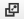

Using the Tablet Interface
| |
Note: This article applies to Fuji and earlier releases. For more current information, see Tablet Web UI at http://docs.servicenow.com
The ServiceNow Wiki is no longer being updated. Visit http://docs.servicenow.com for the latest product documentation. |
Contents
- 1 Overview
- 2 Accessing an Instance
- 3 Using the Application Navigator
- 4 Rotating the Tablet
- 5 Managing Favorites and Shortcuts
- 6 Preview Pane
- 7 Viewing Recently Accessed Documents
- 8 Accessing the List Header Menu
- 9 Accessing the List Row Menu
- 10 Accessing the Form Menu
- 11 Toggling Between Related List Views
- 12 Selecting Related Records
- 13 Lookup Lists
- 14 Accessing Another Record from a Form
- 15 Glide List Items
- 16 Labeling Records
1 Overview
The tablet interface provides users the flexibility to manage IT service management tasks through a user-friendly tablet interface. This article explains unique features for the tablet interface and provides instructions for navigating ServiceNow with a tablet.
Several important actions, such as using the application navigator, accessing context menus, selecting items from pick lists, and saving bookmarks, have been enhanced starting with the Dublin release.
2 Accessing an Instance
On a mobile device that meets the tablet support requirements, you can access the standard URL of an instance. The ServiceNow instance automatically detects the tablet and redirects to the tablet interface by appending $tablet.do# to the end of the URL. Accessing either the tablet or desktop interface does not prevent access to the other.
To open the application navigator, tap the icon on the top-left side of the interface.
{kind=link}
{kind=link}
The application navigator displays all the application menus you would normally see in the desktop interface. Scroll the navigator up or down using one or two fingers. To expand a menu, tap the menu name. You can also filter the menu using the same filter field you see on the desktop interface just above the application navigator.
4 Rotating the Tablet
Open the navigator by tapping the icon. When you rotate the tablet, the navigator behavior changes slightly. When you open the navigator while holding the tablet in landscape mode, the screen resizes so that it is all visible to the right of the navigator. When you open the navigator while holding the tablet in portrait mode, the navigator overlays the left side of the screen. If the navigator is open when you rotate the tablet, the navigator automatically closes.
{kind=link}
When the tablet is in landscape mode, you can float the application navigator. This means that the application navigator floats over the left-hand side of the screen. While working full-screen, you can open the application navigator, tap the menu or module you want to view, and close the application navigator without changing the appearance of your screen.
To turn on the floating navigator, tap the gear icon () and select Use Floating Navigator.
{kind=link}
5 Managing Favorites and Shortcuts
The favorites menu in the application navigator shows you only the items marked as favorites. Use the favorites menu to access the items that you use most often. On the application navigator, tap the star icon to add an item to your favorites. You can add items that pertain specifically to you, such as incidents assigned to you. After you add a favorite, the star icon changes to dark gray. To remove a favorite, tap the star icon again.
Modules you access are automatically marked as favorites, by default. You can enable or disable automatic favorites with the Automatically Add Favorites option from the main menu.
{kind=link}
5.1 Accessing the Favorites Menu
To access the favorites menu:
- Tap the favorites icon (
 ). The icon stays depressed.
). The icon stays depressed. - Tap the application navigator icon (). When the favorites icon is depressed, only favorites appear in the application navigator.
{kind=link}
| |
Note: Bookmarks in the desktop version are not the same as favorites in the tablet version. Bookmarks cannot be accessed or modified through the tablet interface. |
5.2 Creating Safari Shortcuts
Use the sharing feature on the Safari browser to create a shortcut to any ServiceNow page. The shortcut is saved on your tablet just like an application. Use shortcuts to quickly access a specific ServiceNow page with one touch.
To create a shortcut:
- Navigate to a frequently used page, such as a list of open incidents.
- Tap the sharing icon on the Safari browser header.
- Tap the ServiceNow Add to Home Screen icon.
- Enter a descriptive name for the page and tap Add. The shortcut is saved to your device.
{kind=link}
6 Preview Pane
The tablet interface provides a handy split-screen view that preserves a list of records in one pane while displaying a read-only preview of a record in another pane. Use this view to preview several records in a list without having to navigate back and forth between lists and forms. The preview pane is available for all lists.
To open the spit-screen view, tap the preview-pane icon (). The icon becomes green and a read-only view of the form opens on the right.
{kind=link}
{kind=link}
To close the preview pane, either tap the Close icon (X) or tap the green preview-pane icon.
| |
Note: If the navigation pane is open when the preview-pane icon is tapped, the navigation pane will close. |
6.1 Adding Comments or Work Notes from the Preview Pane
You can add comments directly from the preview pane to any record that has an Additional Comments journal field. This allows you to enter comments or work notes without scrolling down the form. Comments and work notes are updated in real time.
To add comments or work notes to the record:
- Tap Comment. The Comments and Work Notes pane appears.
- Enter content in the text field.
- Tap Comment or Work note to add the content to the relevant journal field.
{kind=link}
7 Viewing Recently Accessed Documents
The Recently Accessed Documents screen provides an at-a-glance summary of recently accessed records. Avoid tapping through the application navigator to access a record that you need frequently or a record that you just viewed.
To view recently accessed documents:
- Tap the document summary icon (
 ) in the banner. The most recently accessed records appear at the top. A list of important fields appears on each record summary.
) in the banner. The most recently accessed records appear at the top. A list of important fields appears on each record summary. - To open a record from this view, tap the record name.
- To open a read-only preview of the record in another pane, tap the preview-pane icon (). Notice that the preview-pane icon turned green
- To close the preview pane, tap the green preview-pane icon () again.
{kind=link}
{kind=link}
{kind=link}
8 Accessing the List Header Menu
Access the list header context menu by tapping the icon in the list header.
{kind=link}
{kind=link}
Sorting by column header works the same as the standard interface. Simply tap the column name to sort by that column.
9 Accessing the List Row Menu
Tap any cell to see the list row context menu with actions related to the values in that row.
{kind=link}
10 Accessing the Form Menu
Tap the form name or icon to access the form context menu.
{kind=link}
11 Toggling Between Related List Views
When using a tablet to view forms that include multiple sections, such as the Incident form, you can tap Toggle tabs () to toggle between tabbed and sequential arrangements of sections.
{kind=link}
{kind=link}
{kind=link}
In sequential view, you can expand or collapse a section by tapping expand ( ) or collapse (
) or collapse ( ) in the section header.
) in the section header.
12 Selecting Related Records
Related lists allow you to relate a record to the record currently displayed in the form. The tablet interface provides a split-screen record picker so you can easily add and remove related records.
To select related records:
- Navigate to a record form. In the example below, an incident record is related to a problem.
- Tap the incident number. The screen splits to display information associated with the incident. The way that the related list area appears can be changed by tapping the Toggle Tabs button.
- Tap the Related Records tab to view a summary of the related problem.
- You can view or edit the problem record by tapping the preview-pane icon () next to the problem number.
{kind=link}
13 Lookup Lists
To filter the lookup results, use the filter fields above each column. You can also perform a contains search in the filter fields using a period (.). For example, to search for all names that contain the characters tu, enter the following: .tu.
{kind=link}
14 Accessing Another Record from a Form
Tap the reference icon () to jump to another record. On the tablet, tapping the reference icon opens the related record in the full frame, rather than providing the pop-up overlay that appears on the desktop interface.
{kind=link}
{kind=link}
15 Glide List Items
The tablet interface provides an easy way to interact with items that use the glide_list field type, such as watch lists. The following example illustrates how to add a name to a watch list.
- On a form with a watch list field, tap the lookup icon ().
- Filter the watch list by entering text in the search field above any column. The list is automatically filtered as you type. You can also perform a contains search in the filter fields by using the period (.). For example, to search for all names that contain the characters tu, enter the following: .tu.
- Tap the record that you want to add. The record is added to the selection column on the left.
- To add yourself, add an email address, or clear the form, use the menu at the bottom of the selection column:
- Tap Done when finished.
{kind=link}
{kind=link}
{kind=link}
16 Labeling Records
To help group and organize records, users can add labels, which are keywords that describe the record. For example, an incident record that deals with a wireless internet outage could be labeled with the keyword wireless. Later, someone who has access to incident records can filter all incidents by the keyword wireless to see which incidents pertain to that topic. Users can add as many labels as needed to any record. Labels are not case sensitive.
Labels that you add to a record are saved in the Labels table with the following default settings:
- Active: true. The label is enabled and appears in the tablet and desktop interfaces.
- Global: false. The label is not globally visible. Labels are visible only to the user who created them.
- Navigation: false. Tablet labels do not appear in the application navigator on either the tablet or the desktop interface.
Administrators can modify these labels as they would modify labels in the system definition.
16.1 Labels in the Tablet and Desktop Interfaces
Labels in the desktop interface are similar to, but not exactly the same as labels in the tablet interface. Labels set in the desktop version appear in the desktop's application navigator but not the tablet's application navigator or in the tablet's recently accessed documents menu. When using the tablet, follow the instructions in this article for labeling records and accessing records with labels.
16.2 Assigning a New Label
To assign a new label to a record:
- Navigate to a record and tap inside the Add label text box.
- Enter the key terms or groups of terms as you want them to appear. Spaces are allowed between multiple terms.
{kind=link}
16.3 Accessing Records That Have Labels
To access records that have labels:
- Tap to navigate to Recently Accessed Documents.
- Tap the gear icon in the top banner. The list of labels shows the number of records that use each label.
- Select a label to show only records with that label.
{kind=link}
16.4 Editing and Deleting Labels
To edit label text (starting with the Dublin release):
- Tap to navigate to Recently Accessed Documents.
- Tap the gear icon.
- Tap Edit in the list of labels. The labels become editable.
- Make the necessary changes or tap the X icon to delete the label.
- Tap Save.
{kind=link}
- To remove a label from a single record, tap the X next to the label.
{kind=link}